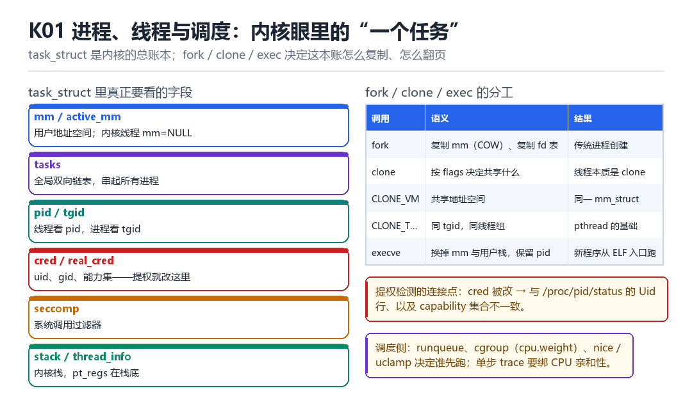

Linux 进程、线程与调度
task_struct、fork/clone/exec、runqueue、cgroup、cred
内核眼里的“一个任务”长什么样，决定了你所有的 hook 手段能改到哪。
1.1 task_struct：内核的总账本
Linux 不区分“进程”和“线程”，它们都是 task_struct。区别只在共享了什么：同一线程组的任务共享 mm、files、sighand；进程则各有一份。所以“创建一个线程”在内核看来就是“clone 时带上 CLONE_VM | CLONE_FILES | CLONE_THREAD”。
| 字段 | 作用 | 为什么会关心它 |
|---|---|---|
| mm / active_mm | 用户地址空间 | 注入、脱壳、内存马都要碰 |
| tasks | 全局双向链表，串起所有进程 | 遍历进程的最快方式 |
| pid / tgid | 线程 id 与进程 id | 检测与隐藏的第一道字段 |
| cred / real_cred | uid、gid、capabilities | 提权就是改这里 |
| seccomp | 系统调用过滤器 | 影响 ptrace/注入可行性 |
| stack | 内核栈指针；pt_regs 压在这块栈的高地址端 | hook 要改现场就改它 |
| thread_info | 现代 arm64（CONFIG_THREAD_INFO_IN_TASK）内嵌在 task_struct 里，不在栈上 | 别再按老资料去栈底找 |

1.2 fork / clone / exec 三兄弟
fork() 复制一份 mm（用 COW 省内存）与 fd 表，返回两次；clone() 按 flags 决定共享哪些资源；execve() 不创建新进程，只是把当前进程的 mm 换成新程序的，pid 保留。
fork() -> copy_mm(COW) + copy_files + copy_sighand
clone() -> 按 flags 选择性共享（CLONE_VM / CLONE_FILES / CLONE_THREAD）
execve() -> 换 mm、换用户栈、保留 pid，从 ELF 入口重新开始1.3 调度：谁先跑
每个 CPU 有一个 runqueue，里面的任务按调度类排队（stop > dl > rt > fair > idle）。普通进程走 CFS/EEVDF，用 nice 与 cpu.weight（cgroup）影响权重。
这一节对做单步 trace（M04）很关键：单步必须绑定 CPU 亲和性，否则任务被迁到别的核，调试寄存器的状态就乱了。
1.4 cred：权限的唯一真相
cred 是内核里“你是谁”的完整描述：uid、gid、补充组、capabilities、SELinux SID。提权操作的本质就是把 cred 换成一个 uid=0 的版本（commit_creds(prepare_kernel_cred(0)) 是经典写法）。
1.5 本章自测
- 进程与线程在内核里的唯一区别是什么？
- 为什么 fork 比想象中便宜？
- cred 里包含哪些信息？提权改的是哪几个字段？
- 为什么单步 trace 必须绑核？
1.6 深入：一次 fork 到底复制了什么
fork 的开销之所以小，是因为它复制的是“表的指针”，而不是表里的内容：页表被标记为只读并被双方共享（COW），fd 表被 copy_files 处理（引用计数 +1，除非带了 CLONE_FILES），信号处理表也类似。
| 资源 | fork（不带对应 flag） | 带 flag 时 |
|---|---|---|
| mm 页表 | 复制 mm_struct，页表标记 COW | CLONE_VM：共享同一个 mm |
| fd 表 | 新建 files_struct 并复制 fd 数组，每个 file 各 +1 | CLONE_FILES：refcount+1，共享同一个 files_struct |
| 信号处理 | 新建 sighand 并复制处理函数表 | CLONE_SIGHAND：共享同一张表 |
| 线程组 | 新建 tgid | CLONE_THREAD：加入同一线程组 |
这里有个常见误解：fork 不是“引用计数 +1 共享 fd 表”，而是“真的复制一份表”——所以父子进程之后各自 open/close 互不影响，但已打开的 struct file 是共享的（refcount 各 +1）。只有 CLONE_FILES 才是共享同一个 files_struct。
1.7 实战：遍历所有进程的两种方式
for pid in $(ls /proc | grep -E '^[0-9]+$'); do
echo "$pid $(cat /proc/$pid/comm 2>/dev/null)"
donestruct task_struct* t;
rcu_read_lock();
for_each_process(t) {
pr_info("%d %s\n", t->pid, t->comm);
}
rcu_read_unlock();1.8 原理推演：为什么 Linux 不需要“线程”这个概念
因为“进程”与“线程”的差别，本质上只是“共享了哪些资源”。Linux 把这个问题交给 clone 的 flags，于是“线程”只是“共享 mm 与 files 的 task”，不需要单独的数据结构与调度逻辑。
| 概念 | Linux 里的实现 | 共享 |
|---|---|---|
| 进程 | task + 独立 mm/files | 无 |
| 线程 | task + CLONE_VM|CLONE_FILES | mm、files |
| 容器 | namespace + cgroup | 内核视图 |
这个设计的直接后果：/proc 里每个 task 都有自己的目录，但同组的线程共享 tgid。所以“数线程”和“数进程”是两个不同的操作。
1.9 数据细节：cred 的字段
kuid_t uid, euid, suid, fsuid;
kgid_t gid, egid, sgid, fsgid;
kernel_cap_t cap_inheritable, cap_permitted, cap_effective;
struct user_struct *user;
struct ucounts *ucounts;
// SELinux 的 SID 也存在这里（通过 security 指针）注意 fsuid 与 euid 的区别：文件访问用的是 fsuid。有些“提权”只改了 euid，结果读文件还是失败——这就是“改了但没生效”的经典原因。
把内核想成一个从不被询问的裁判
凌晨两点，你在 adb shell 里敲下 strace -f -e trace=clone,execve，然后冷启动一个 App。屏幕上瞬间滚出几十行 clone——但真正的戏不在这几十行里，而在内核那本从不被询问的总账上：它一声不吭地给每个新任务发了一张身份证，又悄悄决定谁先上 CPU。你从来没问过它，它也不打算解释。
把内核想象成一个从不被询问的裁判：它不关心你给进程起了什么名字，只盯着 task_struct 里那几个字段。谁排在 runqueue 前面、谁的 cred 写着 uid=0、谁的 mm 和别人共用一份——这三件事定下来，后面所有 hook、注入、隐藏能改到哪，就全定了。
一次 fork，两次返回，谁拿到 0
- 父进程 对 内核 发起
fork()：陷入 EL1 后走kernel_clone，内核先copy_process造一个新的task_struct，把mm、files、sighand按 flags 复制或共享 → 结果：系统里多了一个任务，但它的状态还是新建，一次都没跑过。 - 内核 对 子进程的现场 写死返回值：在新任务的
pt_regs里把x0置 0，pid填成新分配的 tid；回头在 父进程的 `pt_regs` 里把x0填成这个 tid → 结果：同一段if (pid == 0)代码，父子各走一支，这就是所谓返回两次。 - 内核 对 页表 做 COW：父子页表项都指向同一批物理页，但双方都清掉可写位 → 结果：谁先写，谁才在缺页里拿到自己的副本；
fork因此几乎不复制内存内容。 - 内核 对 父进程 收尾时调
wake_up_new_task：把新任务挂到某个 CPU 的 runqueue → 结果：子进程第一次有了被调度的资格，此刻它才真正活着。 - `execve` 对 当前 `mm` 动手：不新建任务，直接把
mm换成新 ELF 的，用户栈重铺，pid 原封不动 → 结果：ps 里那个 pid 没变，进程里跑的却是完全另一个程序。
注意第 2 拍：getpid() 拿到的其实是 tgid，不是 task_struct->pid。一个多线程进程里，主线程的 pid 等于 tgid，其余线程的 pid 各不相同、tgid 全都相同。内核眼里的 pid 是线程号，用户眼里的 pid 是线程组号——两套编号从一开始就错开了半格。
一个新任务是怎么被推上 CPU 的
- 时钟中断 对 当前 CPU 打一拍：定时器 IRQ 到，
scheduler_tick更新当前任务的vruntime（CFS/EEVDF 按权重折算虚拟运行时间） → 结果：跑得久的任务在红黑树里往右挪。 - 调度器 对 runqueue 挑人：
pick_next_task按 stop、dl、rt、fair、idle 的顺序，先在 fair 类里取vruntime最小的那个 → 结果：拿到下一个task_struct指针。 - `context_switch` 对 两套上下文 分开处理：
switch_mm换TTBR0_EL1（用户页表基址），switch_to保存并恢复 x19–x30、sp 与 per-CPU 状态 → 结果：地址空间和寄存器现场同时切到新任务。 - 被换下的任务 对 自己 只剩一件事：它的内核栈上留着上一次
switch_to的现场，下次被选中时从这里接着跑 → 结果：在它看来自己从没停过，只是schedule()一直没返回。 - 绑核操作 对 任务 收紧
cpus_allowed：sched_setaffinity之后只在某一个 CPU 的 runqueue 上排队 → 结果：任务不再迁移，per-CPU 的调试寄存器状态才不会丢。
| clone 带上的 flag | 共享了什么 | task_struct 里的变化 | 观察命令 |
|---|---|---|---|
| CLONE_VM | 整个 mm_struct 与页表 | mm 指针相同，不触发 COW | 对比两份 /proc/self/maps |
| CLONE_FILES | 同一个 files_struct | fd 数组共享，一边 close 另一边也少一个 | 对比 /proc/self/fd 与 /proc/<tid>/fd |
| CLONE_THREAD | 同一线程组 | tgid 相同、pid 不同 | cat /proc/self/status 看 Tgid 与 Pid |
| CLONE_SIGHAND | 信号处理函数表 | 一边 sigaction，另一边同步生效 | grep Sig /proc/self/status |
| 一个都不带 | 几乎全复制 | 新 tgid、新 mm（COW）、新 fd 表 | strace -f -e clone 看到独立 pid |
在 /proc 里把它抓住
# 1. 冷启动一个程序，只看进程创建与 exec
strace -f -e trace=clone,clone3,fork,vfork,execve -o /data/local/tmp/trace.txt ls /system/bin
# 成功：clone(...) = <子pid> 紧跟一行 execve(...) = 0，父进程那行返回同一个子 pid
# 失败：只有 execve 没有 clone => 被 zygote 预 fork，或直接 attach 了已有进程
# 2. 抓当前进程的三组身份字段
cat /proc/self/status | grep -E '^(Name|Pid|PPid|Tgid|Threads|Uid|CapEff|Seccomp)'
# 成功：Pid 与 Tgid 不等 => 你正处在一个子线程里；Threads 大于 1 => 线程组确实存在
# 失败：字段缺失或全是 0 => 内核没开 CONFIG_PROC_FS，或读到被 namespace 过滤的 proc
# 3. 看调度器给这个任务记的账
cat /proc/self/sched | grep -E 'nr_switches|sum_exec_runtime'
# 成功：连续读两次，nr_switches 增长 => 它确实被换下又换上过
# 失败：数字纹丝不动 => 它一直独占 CPU，多敲几条命令制造调度再读
# 4. 绑核前后对照（需要能写 affinity 的 shell）
taskset -p $$
# 成功：打印出 cpus_allowed 位图；失败：Operation not permitted => 被 cgroup cpuset 限制判定标准都写在注释里，这里再收一句：strace 成功的关键证据是 同一个 pid 在 clone 与 execve 两行里连续出现——它证明 execve 没有换 pid。而 nr_switches 不涨不一定是错，可能只是这个 shell 一直独占 CPU。别把没观察到当成不存在，这是 /proc 类观测最常见的误判。
把这条结论记牢：pid 会变、mm 会换、cred 能被替换，但 runqueue 与 clone flags 决定谁看得见谁。第三部 F01 讲 Zygote 门控时会直接借用这套 fork 模型，解释为什么注入必须卡在 fork 之前；第四部 M02 遍历进程做观察面收口，走的就是 for_each_process 那条 tasks 链表；第五部 L09 用线程数与 Tgid 做结构差分，追的也是这里说的编号错位。